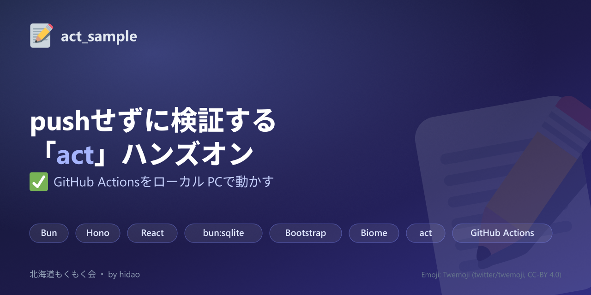

pushせずに検証する「act」ハンズオン
GitHub ActionsをローカルPCで動かす — 北海道もくもく会（2026-09-05）
これは何？
act
を使うと、GitHub Actionsのワークフローを
pushせずローカルのDockerコンテナーで検証
できます。本リポジトリは、bun + Hono + React + bun:sqlite
で組んだ最小構成のTODOアプリを題材に、actのセットアップから実行、
つまずきやすいポイントまでをひととおり体験できるハンズオン一式です。
Bun
Hono
React
bun:sqlite
Bootstrap
Biome
act
GitHub Actions
きっかけ
CIを組んだ直後、ワークフローのYAMLを少し書き換えるたびに pushしてGitHub Actionsの実行結果を待つ必要がある不便さに何度も遭遇しました。「架空のサンプルではなく、自分たちが実際に運用しているワークフローを そのまま検証できる」ハンズオンを、もくもく会の参加者にもなぞってもらえるように 記事とスライドの両方を用意しました。
ハンズオンの流れ
.actrc でrunnerイメージをマッピングする